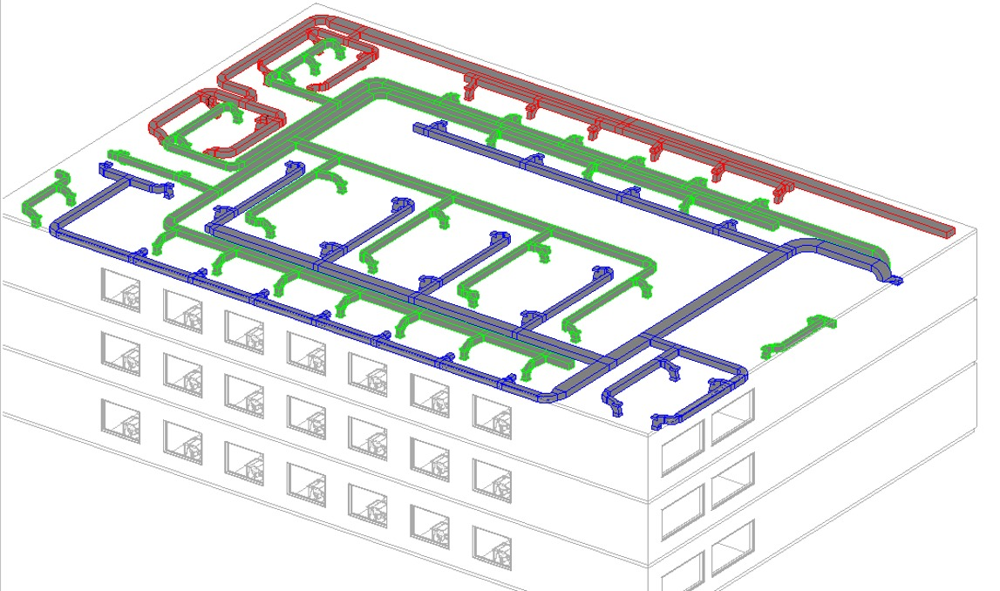
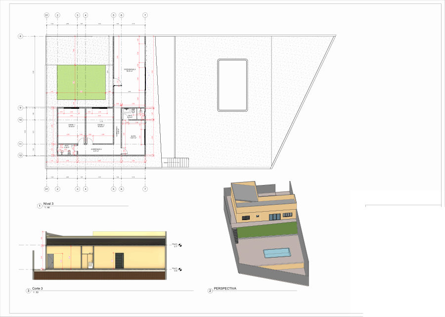
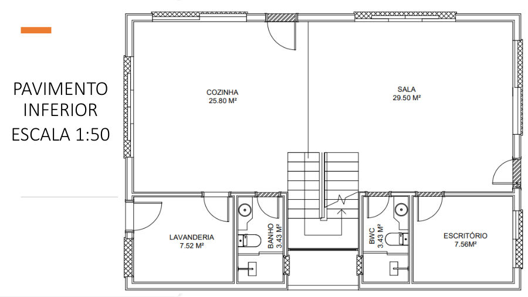
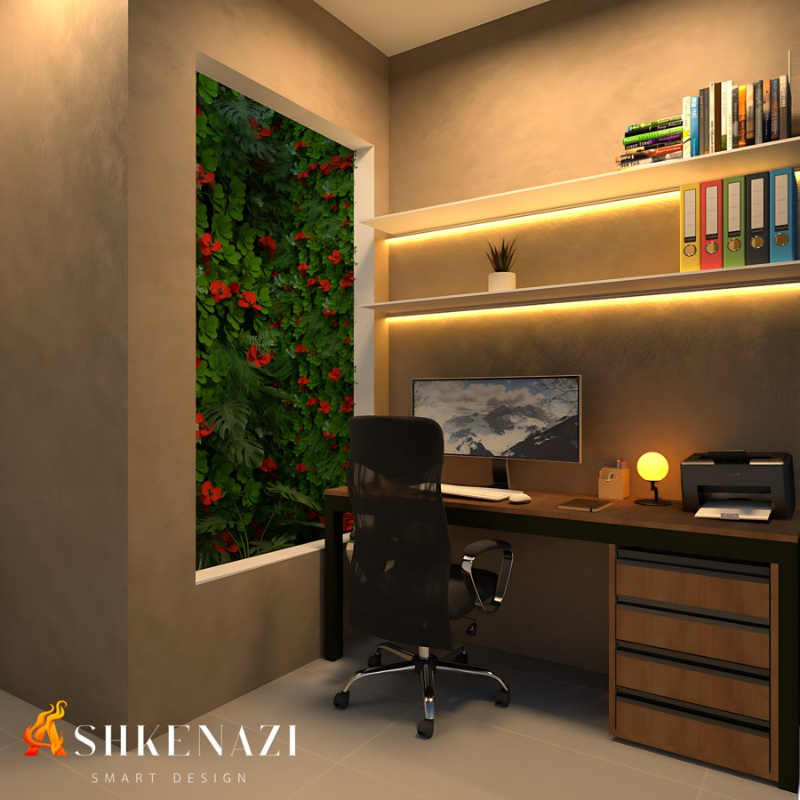
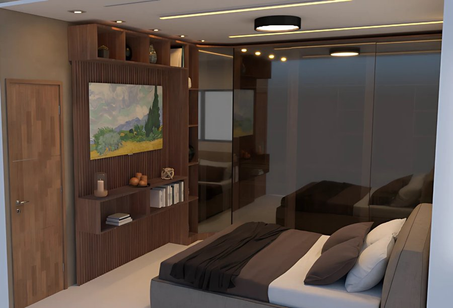
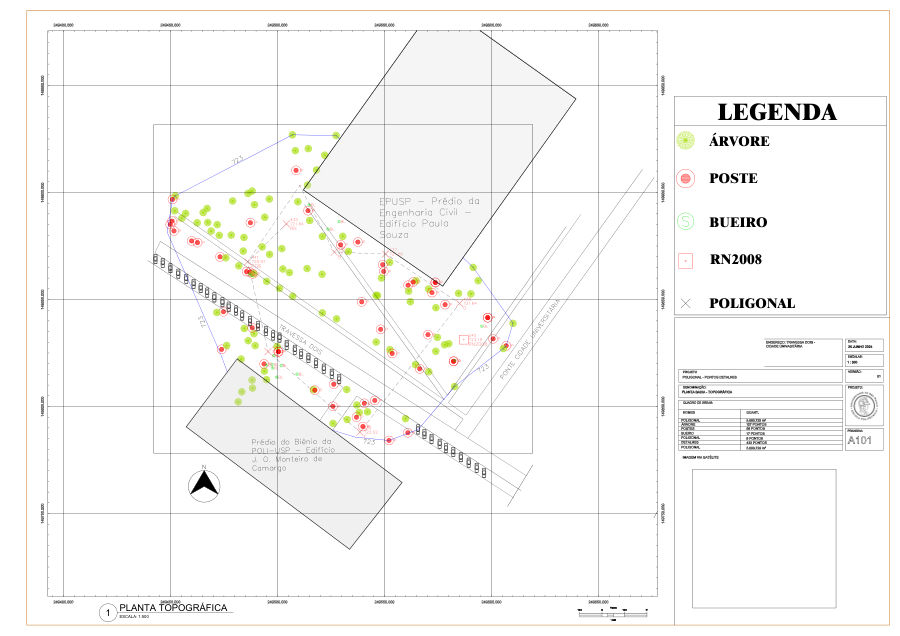
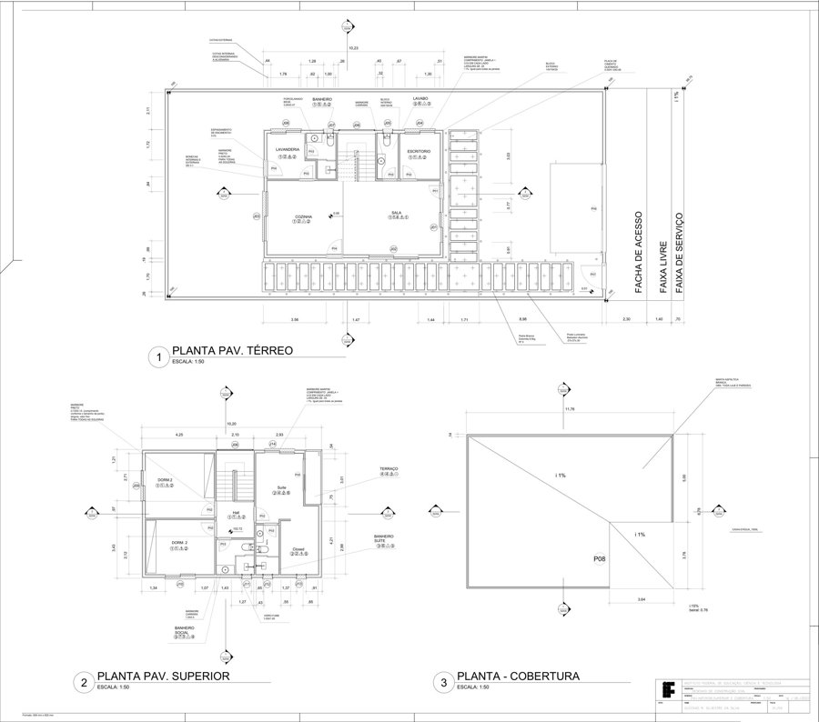
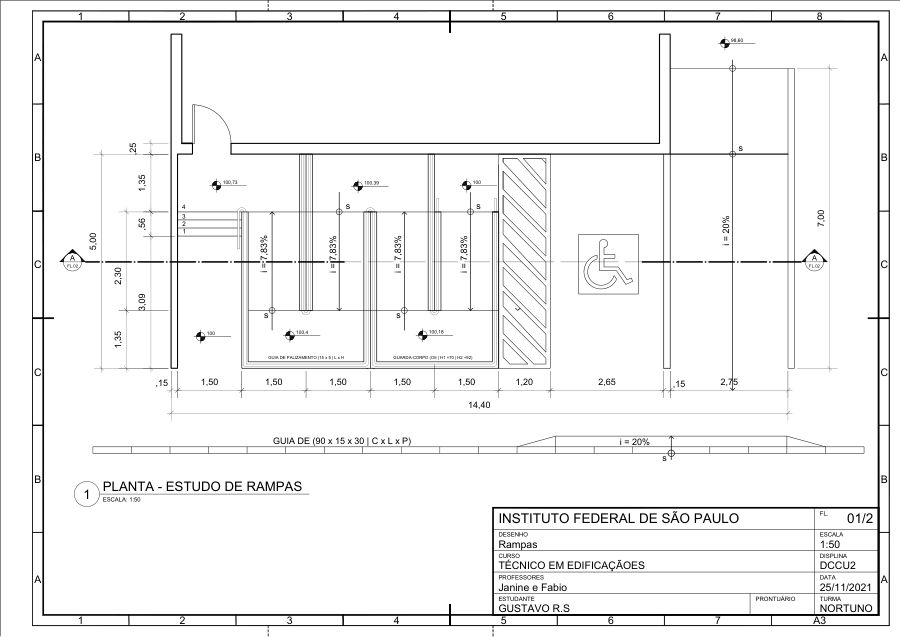
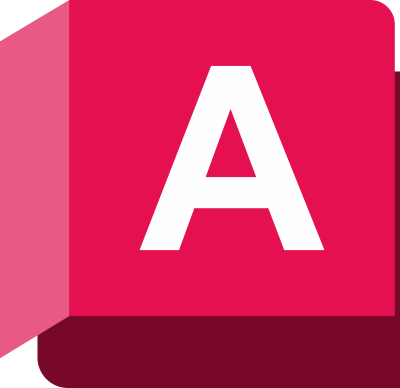

Sobre mim
Da prancha técnica à engenharia
Sou estudante de Engenharia Civil na Escola Politécnica da USP, onde entrei em 2024, e Técnico em Edificações pelo IFSP desde 2022. Minha trajetória na construção civil começou no curso técnico: lá me qualifiquei como Desenhista de Construção Civil e Inspetor de Obras, e fui bolsista de monitoria em Sistemas Prediais Hidráulicos e Sanitários, elaborando projetos e ajudando alunos de Engenharia e do Técnico no AutoCAD.
Desde então, desenvolvo projetos acadêmicos e para clientes, da arquitetura aos sistemas prediais, passando por estrutura e topografia. Tenho facilidade com projetos executivos e com o fluxo de trabalho BIM.
Sou comunicativo, organizado e detalhista, e gosto de aprender coisas novas. Busco uma oportunidade na construção civil onde eu possa aprender e contribuir com a equipe.
- São Paulo – SP
- Poli-USP · Engenharia Civil
- Técnico em Edificações · IFSP
- Espanhol avançado
- Inglês intermediário
Projetos
Trabalhos acadêmicos e profissionais. Clique em um projeto para ver os detalhes.

Climatização (HVAC) de escritório em Brasília
Carga térmica de 66.276 W, 2 UTAs por andar, chiller de água gelada, dutos e diagrama unifilar.
Ver projeto →
Chácara em Igaratá
Residência de 117,75 m²: projeto arquitetônico, estrutural preliminar e esgoto sanitário.
Ver projeto →
Residência unifamiliar
Do programa de necessidades ao detalhamento, em 11 pranchas: plantas, fachadas, cortes, áreas molhadas, implantação e estrutura.
Ver projeto →
Reforma de cozinha
Executivo em 12 folhas: 3D, plantas e vistas, marcenaria detalhada, quantitativo e marmoraria.
Ver projeto →
Escritório com vista para o jardim
Home office com uma grande abertura para o jardim, baseado em estudos que associam a natureza a mais calma e concentração.
Ver projeto →
Dormitório para descansar
Quarto pensado para o descanso: luz quente e indireta, madeira, uma paisagem como ponto focal e tudo organizado.
Ver projeto →
Condomínio residencial
Planta humanizada de pavimento-tipo com duas unidades, modelada em Revit.
Ver projeto →
Levantamento topográfico
Trabalho em grupo: poligonal de 5.693 m² com 432 pontos de detalhe na Cidade Universitária.
Ver projeto →
Desenho de Construção Civil
Quatro pranchas de uma residência: plantas, cortes e gradil, vistas, detalhes e tabelas de esquadrias.
Ver projeto →
Escada e rampas
Corte de escada (1:25) e estudo de rampas acessíveis (1:50).
Ver projeto →Formação e habilidades
Formação
-
Engenharia CivilEscola Politécnica da USP · ingresso em 2024
-
Técnico em EdificaçõesIFSP – Campus São Paulo · concluído em 2022 Qualificações: Desenhista de Construção Civil (955,30 horas) e Inspetor de Obras (898,20 horas)
Experiência
- Bolsista de monitoria em Sistemas Prediais Hidráulicos e Sanitários Residenciais, IFSP (03/2022 – 12/2022): elaboração de projetos e apoio a alunos de Engenharia e do Técnico no AutoCAD
- Projetos residenciais para clientes
Softwares
- Revit Architecture
- Revit MEP

AutoCAD- Inventor
- SketchUp
- V-Ray
 Excel
Excel Word
Word PowerPoint
PowerPoint
Conhecimentos
- Projeto arquitetônico
- Carga térmica / HVAC
- Hidrossanitário
- Concepção estrutural
- Topografia
- Interiores
- Design biofílico
- Espanhol avançado
- Inglês intermediário
Vamos conversar?
Em busca de oportunidades na área da construção civil.